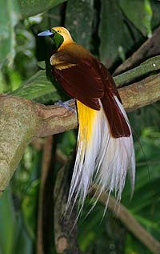

DAERAH MERAUKE
Merauke adalah sebuah kabupaten di Provinsi Papua, Indonesia, yang dikenal dengan keindahan alamnya dan keragaman budaya masyarakatnya.
Website ini menyajikan beberapa tampilan yaitu berita, foto, video, dan profil tentang daerah Merauke.
Explore NowMerauke adalah sebuah kabupaten di Provinsi Papua, Indonesia, yang dikenal dengan keindahan alamnya dan keragaman budaya masyarakatnya.
Pulau Papua adalah pulau terbesar kedua di dunia, terletak di bagian timur Indonesia, dan dikenal dengan keanekaragaman hayati serta budaya yang kaya.
keindahan Merauke terletak pada lanskap alamnya yang memukau, mulai dari pantai berpasir putih, hutan tropis yang lebat, hingga sungai-sungai yang mengalir jernih.